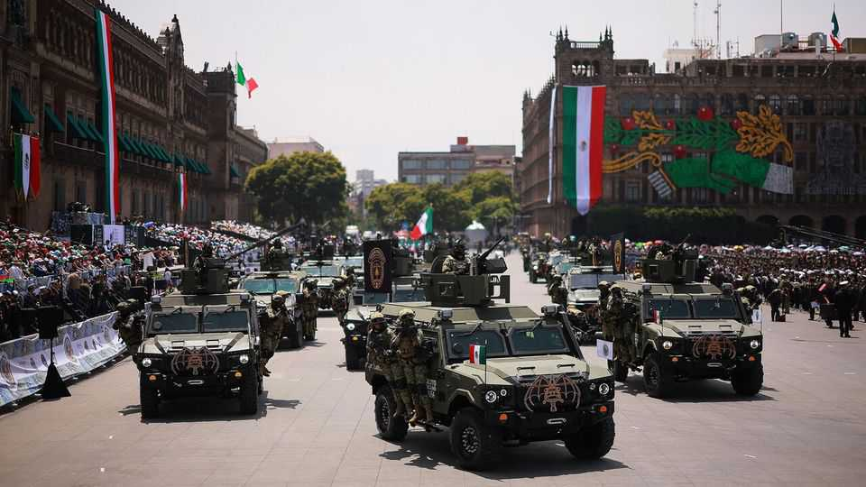

A new museum for Mexico’s armed forces prompts a backlash
Some worry about the army’s ever expanding role in the state

Oct 1st 2026
By some counts, Mexico City has more museums than any other city. Yet a proposal for a new one has caused an uproar. On September 20th Reforma, an influential newspaper, revealed the defence ministry’s plans to build a vast museum complex dedicated to the armed forces in Chapultepec, the capital’s main park.
The backlash was swift. NGOs issued statements; residents circulated petitions. On September 24th Clara Brugada, the capital’s mayor, declared that the museum could not be built in Chapultepec. A week after the plan came to light, the army said that it would seek a different location.
A new address may appease environmentalists, who noted that the proposed site was on protected land in the “lung of the city”, an important public space for residents. But it probably won’t calm the furore. Many balk at spending 1.7bn pesos ($94m) on a museum when the defence ministry already has several, and while Mexico spends a paltry 0.7% of GDP on public security in which the army plays a large role. That is less than half the average in the OECD, a club of rich and middle-income countries, despite Mexico being far more dangerous.
Under Morena, Mexico’s ruling party, the armed forces have sprawled. Between 2018 and 2024 Andrés Manuel López Obrador, then president, handed the army numerous civilian jobs, from building a tourist train and a new airport in the capital, to running customs, distributing vaccines and operating hotels and airports. Such projects are lucrative; deemed as tied to national security, they escape oversight.
Cristina Reyes of Mexico United Against Crime, an NGO in Mexico City, worries that Mexicans are getting used to this expanded role. She points to documents leaked in 2022 by a group of hackers known as Guacamaya, which showed that the army planned to burnish its image using television shows, mascots and social-media influencers. “Museums tell us who we are as a society,” she says. It seems Mexicans prefer to be known for tacos and Day of the Dead festivities than guns and tanks.■